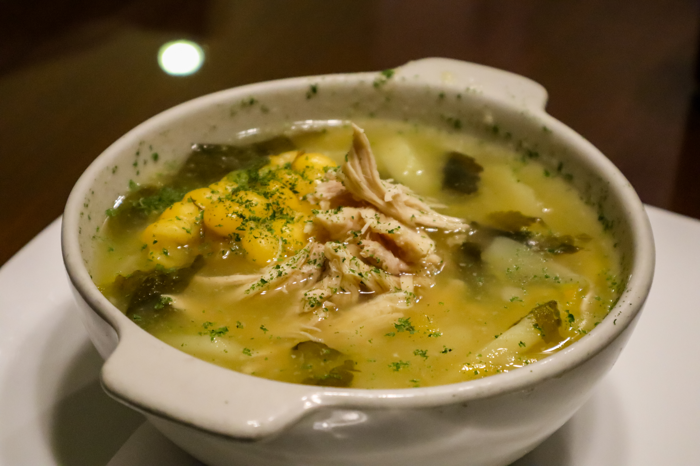

Santa Fe Soup Recipe

Description
This Santa Fe soup makes a quick meal that you can customize to be as mild or as hot as you like,
depending on the stewed tomatoes with chiles that you use. Serve with hot cornbread or warmed flour
tortillas.
Ingredients
- ground beef 1 pound
- can peeled and diced tomatoes 1 (14.5-ounce)
- can diced tomatoes with green chile peppers 1 (10-ounce)
- can whole kernel corn 1 (15.25-ounce)
- cans ranch-style beans 2 (15-ounce)
- processed cheese food (such as Velveeta), cubed 1 pound
- 1 onion, chopped
Directions
- Heat a large skillet over medium-high heat. Cook and stir ground beef in
the hot skillet until browned and crumbly, 5 to 7 minutes. Drain and
discard grease.
- Combine browned beef, tomatoes with liquid, tomatoes with chilies, corn with liquid,
ranch-style beans with liquid, cubed processed cheese, and onion in a large pot.
Simmer on low heat until cheese is melted and the onion is tender. Serve hot.